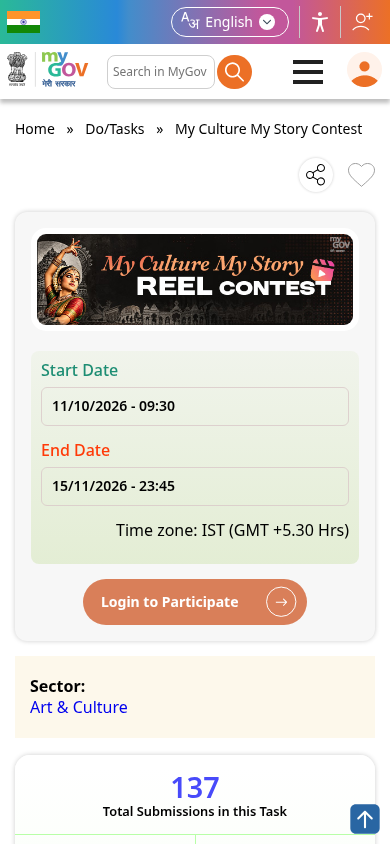

My Culture My Story Contest: MyGov, 100 winners get a ₹500 Digi Haat coupon, ends 15 November
MyGov's My Culture My Story Contest asks Indian citizens to share a cultural story from their own community, region or heritage as a short video or illustrated story. The contest runs from 11 October to 15 November 2026. 100 winners each get a ₹500 Digi Haat coupon, and there is no entry fee.

Official publisher artwork hosted by its publisher. Official source. Independent guide, not affiliated or sponsored. Artwork and trademarks belong to their owners.
At a glance
- Organiser: MyGov (Government of India)
- Dates: 11 October 2026, 9:30 AM to 15 November 2026, 11:45 PM IST
- Who: citizens of India
- Fee: none (terms, clause 2)
- Reward: 100 winners, ₹500 Digi Haat coupon each, plus possible wider visibility on MyGov platforms
Pick one of 8 themes
- Traditional art or craft
- Folk song, dance or music
- Festival or tradition
- Historical or heritage site (lesser known)
- Local cultural personality
- Traditional practice, such as food, architecture, agriculture or healing
- Language or dialect
- Lesser-known cultural story or local legend
What you can submit
- A short video or reel of 30 to 60 seconds
- An illustrated story (720p)
- Digital storytelling, a 60-second documentary-style video, or a creative visual narrative of 30 to 60 seconds
- Any language
How entries are judged
- Cultural relevance and authenticity
- Storytelling and narrative quality
- Creativity and originality
- Research and cultural insight
- Presentation and engagement
Rules that matter
- Register on MyGov and keep your profile accurate. You must give your correct name, email, phone number and postal address with state
- Content must be your own and must not infringe anyone's copyright. Plagiarised, offensive or harmful entries are disqualified
- Once submitted, an entry cannot be withdrawn
- Late entries are not considered
- Providing contact details gives consent for their use for this contest. Sensitive topics need an appropriate disclaimer, according to the terms.
- MyGov may use entries for promotion with credit, royalty-free
- Winners are announced on blog.mygov.in, and non-winners are not notified
- The organiser can cancel or change the contest or its terms, and its decision is final
We read the MyGov contest page and the published terms and conditions PDF on 14 October 2026. The terms are titled "Reel Contest" while the page lists several formats, so follow the page and confirm on MyGov. We did not submit an entry.
How to enter: step by step
Checked on the live MyGov task page on 19 October 2026 - entries are open from 11 October to 15 November 2026, 23:45 IST.
- Open the official contest page: mygov.in/task/my-culture-my-story-contest and read its current terms. The banner calls it a Reel Contest while the page lists more formats - follow the current instructions on the page.
- Pick one of the 8 themes and prepare your entry - your own original content (reel or another listed format).
- Tap Login to Participate on the task page.
- Log in with your MyGov account - email or mobile with OTP, or username and password; the page also offers Google, Facebook, X and LinkedIn. New users tap Sign Up / Register Now and confirm the OTP.
- Fill the submission form and upload your entry before 15 November 2026, 23:45 IST. Keep the confirmation.
- Entries are judged as described on the page; selected stories feature in "100 Stories of India" with a Rs 500 Digi Haat coupon. Winners are contacted through their MyGov details, so keep them correct.


Step 5 happens inside your own MyGov login, so it is not shown as a screenshot.
Video guides
We searched YouTube on 19 October 2026 for a step-by-step entry video for this contest on the current MyGov portal in English and in Malayalam. We could not verify one that matches this contest, so we are not linking any rather than risk outdated or unrelated instructions.
Frequently asked questions
Is the reward cash?
No. Each of the 100 selected winners gets a ₹500 Digi Haat coupon. Redemption rules were not specified in the terms read.
Is there an entry fee?
No. Clause 2 says participation is free.
Can I withdraw after submitting?
No. Clause 3 says entries cannot be withdrawn, and MyGov may use entries for promotion with credit and royalty-free rights.
What changed since this post?
Contest page and published terms rechecked on 14 October 2026. The page shows an active date window from 11 October to 15 November at 11:45 PM IST, with entries under review, and still lists 100 winners with a ₹500 Digi Haat coupon each. Fee, profile/contact-consent and promotional-use rules checked. Format wording differs between page and Reel Contest PDF. AiCoN did not sign in or submit; upload acceptance and coupon redemption remain unchecked.
Sources: My Culture My Story Contest (MyGov), Terms and conditions (PDF). Checked 14 October 2026; apply steps and video search re-checked 19 October 2026. This is an AiCoN explainer, not a government publication.